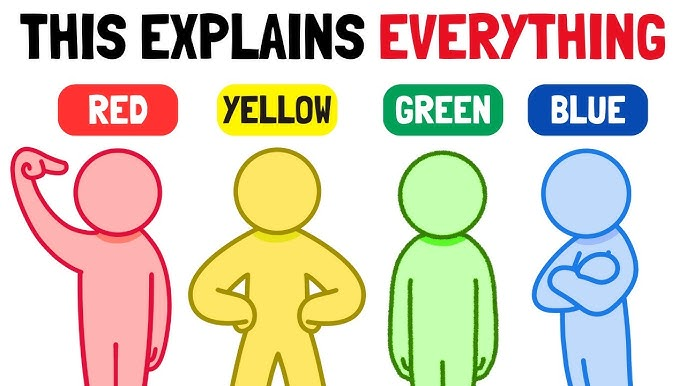
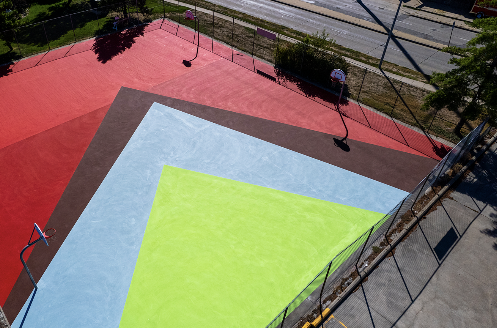
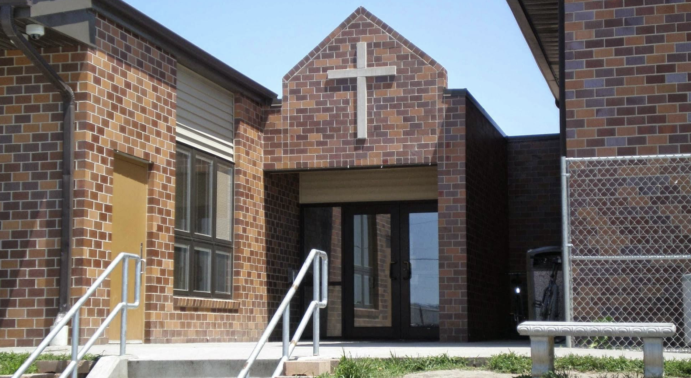

We headed to the court for a friendly game of basketball and used the time to catch up on how our weeks were going. Between plays, we talked through what had been on our minds — the wins, the challenges, and everything in between. It was a relaxed and energizing way to connect, and a good reminder that some of the best conversations happen when you're moving.

One Saturday morning we volunteered at People City Mission, spending a few hours serving food to those in need in our community. It was a grounding experience — a chance to step outside our day-to-day and give back in a tangible way. Working side by side in service reminded us of the value of showing up for others, and the quiet fulfillment that comes with it.
We made our way out to the Beal Slough disc golf course and played through a few holes together. It was Jack's first time picking up a disc on a course, and watching things click for him hole by hole was a highlight. The course wound through some great scenery, and the laid-back nature of the game gave us plenty of time to talk, laugh, and just enjoy being outside.
This past winter we attended the Southeast Gingerbread House-Making retreat — a festive gathering that brought people together around creativity and community. Armed with icing, candy, and way too much ambition, we put our architectural skills to the test. The retreat was a great change of pace and a reminder that some of the most memorable moments together are the simple, joyful ones.
We toured the Kauffman facility and used the visit as a backdrop to dig into Joey's Design Studio Project. Walking through the space sparked a great discussion about design thinking, creative process, and what it looks like to bring a vision to life in a real environment. It was an inspiring outing that connected the classroom to the real world in a meaningful way.
These one-on-ones have been more than just meetings — they've been moments to grow, reflect, and show up for each other. From the court to the observatory, from a mission kitchen to a disc golf course, each outing added something. Here's to more conversations, more adventures, and more time well spent.